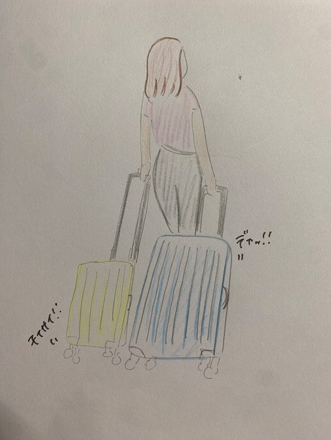
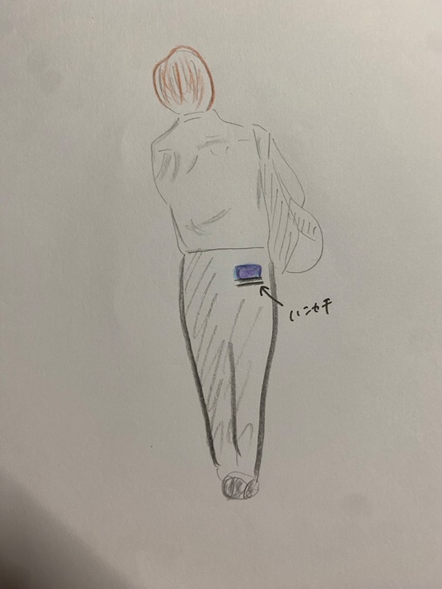
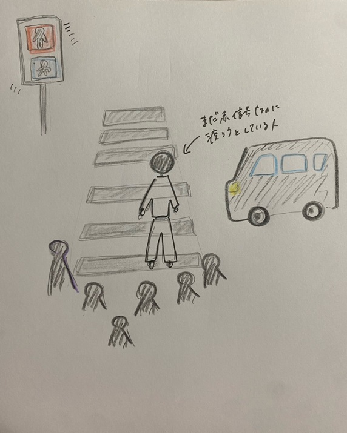

今回の課題は、通学中、電車の中、授業中、バイト中など人々を観察して、気になった人（行動や仕草）を記憶しておき、
家に帰ってスケッチするというものだ。
キャリーケース２個持ちの人

学校帰りに横浜駅を歩いていたら、アジア系外人の女性が、一つはとても大きくて、もう一つはとても小さいキャリーケースを持っているのが印象的だった。
かわいいおじさん

学校帰りの日産付近でおそらく会社おわりのおじさんが、横のポケットではなくてお尻のポケットにハンカチを入れていて、私は「なんだかかわいいな」と感じた。
おじさんがハンカチを持っているというところから、丁寧なかたなのかなとも感じた。
信号赤なのに渡ろうとする人

通学する時や、帰宅途中に「赤信号なのに渡ろうとする人」もしくは「青信号になる少し前にフライングで渡ろうとする人」をよく見かける。
単純に時間がなくて、焦って渡ろうとしている人や、その場所が地元で信号の変わるパターンを熟知している人なのかなと思う。
でも、こういう行動は危険だからやめて欲しいなと感じる。
💕おわり💕